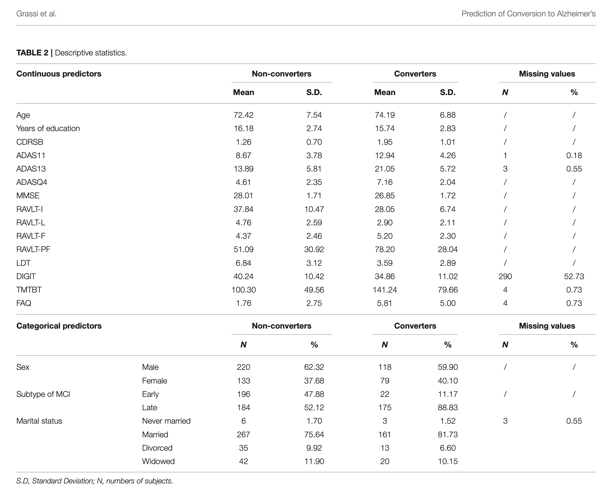

Lecture 13: Introduction to ADNI and Modeling MCI Progression
2026-02-17
Alzheimer’s Disease Neuroimaging Initiative (ADNI)
A longitudinal multicenter study designed to develop clinical, imaging, genetic, and biochemical biomarkers for early detection and tracking of Alzheimer’s disease.
| Phase | Years | N | Focus |
|---|---|---|---|
| ADNI-1 | 2004–2009 | 819 | Establish biomarker methods |
| ADNI-GO | 2009–2011 | 131 | Early MCI (EMCI) cohort |
| ADNI-2 | 2011–2016 | 790 | Expanded biomarkers |
| ADNI-3 | 2016–2022 | 566 | Tau PET, digital biomarkers |
Total enrollment in ADNIMERGE: N = 2,306 subjects at baseline
| Group | Abbreviation | Definition |
|---|---|---|
| Cognitively Normal | CN | No memory complaints, normal cognition |
| Significant Memory Concern | SMC | Subjective concern, normal testing |
| Early MCI | EMCI | Mild memory concern, CDR = 0.5 |
| Late MCI | LMCI | More pronounced deficits, CDR = 0.5 |
| Alzheimer’s Disease | AD | Dementia diagnosis, CDR >= 0.5 |
The distinction between EMCI and LMCI is based on education-adjusted delayed recall scores on the Logical Memory II subscale.
ADNIMERGE is a curated, merged dataset that combines key ADNI variables into a single longitudinal file. It includes demographics, diagnoses, cognitive scores, imaging measures, and biomarker data.
| Property | Value |
|---|---|
| Subjects | 2,306 |
| Total visits | 15,278 |
| Variables | 113 |
| Format | CSV (one row per visit) |
Key variables in ADNIMERGE:
| Characteristic | Value |
|---|---|
| Age, mean (SD) | 73.1 (7.4) years |
| Sex | 46.9% Female, 53.1% Male |
| Education, mean (SD) | 16.0 (2.8) years |
| Race: White | 91.0% |
| Race: Black | 5.2% |
| Race: Asian | 2.0% |
| Ethnicity: Hispanic/Latino | 3.9% |
Baseline Diagnosis:
Key insight: ADNIMERGE has one row per visit per subject. Filter to VISCODE == "bl" for baseline data; use Years_bl to track follow-up time from baseline.
MCI Definition (Petersen Criteria)
MCI represents a transitional state between normal aging and dementia.
| Subtype | Description | AD Risk |
|---|---|---|
| Amnestic MCI (aMCI) | Memory impairment primary | Higher |
| Non-amnestic MCI | Other cognitive domains | Variable |
| Single-domain | One cognitive domain affected | Lower |
| Multi-domain | Multiple domains affected | Higher |
ADNI focuses primarily on amnestic MCI (single and multi-domain).
In ADNIMERGE: 1,063 MCI subjects (404 EMCI + 659 LMCI).
Not all MCI patients progress to AD
Clinical need: Identify which MCI patients will progress to AD
From our ADNIMERGE.csv data (applying Grassi et al. criteria: MCI subjects with 3+ years follow-up, age 55–90, MMSE 24–30):
| Outcome | N | Percentage |
|---|---|---|
| Stable MCI (sMCI) | 446 | 75.2% |
| Converter to AD (cAD) | 147 | 24.8% |
| Total | 593 | 100% |
Grassi et al. (2019) reported 550 subjects (197 converters, 35.8%) from an earlier ADNIMERGE download. Our dataset yields 593 subjects with a 24.8% conversion rate, reflecting additional ADNI-2 and ADNI-3 enrollment with more EMCI subjects who convert at lower rates.
Your Project 2 Hypothesis
Replicate and extend the approach of Grassi et al. (2019) to predict conversion from MCI to AD using machine learning methods applied to baseline clinical and cognitive data.
Reference: Grassi M, et al. (2019). A Clinically-Translatable Machine Learning Algorithm for the Prediction of Alzheimer’s Disease Conversion in Individuals with Mild and Premild Cognitive Impairment. Frontiers in Neurology, 10:756.
Cohort Selection:
Outcome:
| Metric | Value |
|---|---|
| AUROC | 0.88 |
| Sensitivity | 77.7% |
| Specificity | 79.9% |
| PPV | 71.9% |
| NPV | 84.3% |
Interpretation: The model correctly identifies ~78% of future converters while maintaining ~80% specificity for stable patients.

Grassi et al. Table 2
Your goal: Reproduce a similar table for your MCI cohort, comparing converters (cAD) vs. stable (sMCI) subjects.
Clinical Translatability:
The goal is a clinically practical prediction tool, not maximum possible accuracy with expensive biomarkers.
Grassi et al. used four categories of baseline features:
| Category | Examples |
|---|---|
| Sociodemographic | Age, education, sex, marital status |
| Clinical Scales | CDR-SB, FAQ |
| Neuropsychological | MMSE, ADAS, RAVLT, LDELTOTAL, TMTB |
| MCI Subtype | EMCI vs. LMCI |
Note: Imaging and genetic features were intentionally excluded to maximize clinical applicability.
| Variable | Description | Coding |
|---|---|---|
| AGE | Age at baseline | Years |
| PTEDUCAT | Years of education | Years |
| PTGENDER | Sex | Male/Female |
| PTMARRY | Marital status | Married/Widowed/etc. |
Clinical Dementia Rating - Sum of Boxes (CDR-SB):
Functional Activities Questionnaire (FAQ):
| Test | Domain | Scoring |
|---|---|---|
| MMSE | Global cognition | 0–30 (higher = better) |
| ADAS-Cog 11/13 | Memory, language, praxis | 0–70/85 (higher = worse) |
| RAVLT Immediate | Verbal learning | Sum of trials 1–5 |
| RAVLT Learning | Learning rate | Trial 5 - Trial 1 |
| RAVLT Forgetting | Retention | Trial 5 - Delayed |
| LDELTOTAL | Logical memory | Delayed recall score |
| TRABSCOR (TMTB) | Executive function | Seconds (higher = worse) |
The Alzheimer’s Disease Assessment Scale-Cognitive (ADAS-Cog):
RAVLT Protocol:
Key derived scores in ADNIMERGE:
Top predictors ranked by individual AUROC (Table 6):
Key insight: Memory retention (RAVLT) and executive function (TMTB) add predictive value beyond global measures like ADAS and MMSE.
Grassi et al. used an ensemble of 13 algorithms:
Ensemble Learning: Combining predictions from multiple models often outperforms any single model by reducing variance and capturing different aspects of the data.
The final prediction used weighted rank averaging across all models.
| Category | Algorithms |
|---|---|
| Linear | Logistic Regression, Elastic Net |
| Probabilistic | Naive Bayes |
| Instance-based | k-Nearest Neighbors |
| Kernel | SVM (linear, polynomial, RBF, sigmoid) |
| Neural | Multilayer Perceptron |
| Tree-based | Random Forest, Gradient Tree Boosting |
Critical: Proper validation prevents overfitting and provides realistic performance estimates.
Grassi et al. used:
adni <- read.csv("./data/ADNIMERGE.csv", na.strings = "-4")
# 67 unique sites available
length(unique(adni$SITE))
# Split by site to ensure independence
train_sites <- c(2, 3, 5, 6, 7, 9, 10, ...)
test_sites <- c(11, 12, 13, 14, ...)
train_data <- adni_mci |> filter(SITE %in% train_sites)
test_data <- adni_mci |> filter(SITE %in% test_sites)Site-independent testing simulates real-world generalization: Will the model work at a clinic that wasn’t used for training?
| Metric | Formula | Interpretation |
|---|---|---|
| Sensitivity | TP/(TP+FN) | Converters correctly identified |
| Specificity | TN/(TN+FP) | Stable correctly identified |
| PPV | TP/(TP+FP) | Precision for converters |
| NPV | TN/(TN+FN) | Precision for stable |
| AUROC | Area under ROC | Overall discrimination |
Assignment: Develop a machine learning model to predict MCI to AD conversion using baseline ADNI data, following the Grassi et al. approach.
Due: March 3, 2026
Deliverables:
Your analysis must include:
library(tidyverse)
# Step 1: Load ADNIMERGE
adni <- read.csv("./data/ADNIMERGE.csv", na.strings = "-4")
# Step 2: Select MCI subjects at baseline
mci <- adni |>
filter(DX_bl %in% c("EMCI", "LMCI"))
# Step 3: Identify subjects with 3+ years follow-up
followup <- mci |>
group_by(RID) |>
summarize(max_years = max(Years_bl, na.rm = TRUE))
rids_3yr <- followup |>
filter(max_years >= 3) |>
pull(RID)# Converters: DX changed to "Dementia" within 3 years
converters <- mci |>
filter(RID %in% rids_3yr, Years_bl <= 3) |>
group_by(RID) |>
summarize(
converted = any(DX == "Dementia", na.rm = TRUE)
)
# Merge to baseline data
mci_bl <- mci |>
filter(VISCODE == "bl", RID %in% rids_3yr) |>
left_join(converters, by = "RID") |>
filter(AGE >= 55, AGE <= 90,
MMSE >= 24, MMSE <= 30)
table(mci_bl$converted)
# FALSE TRUE
# 446 147| Week | Task |
|---|---|
| Week 7 (Feb 17–21) | Data preparation, cohort definition |
| Week 8 (Feb 24–28) | Feature engineering, initial models |
| Week 9 (Mar 2–6) | Model tuning, evaluation, report |
| Mar 3 | Final submission |
Start early. Data cleaning and feature engineering take longer than expected.
Papers (on Canvas):
R Packages:
caret or tidymodels – ML frameworkrandomForest, glmnet, e1071 – AlgorithmspROC – ROC analysiskableExtra – Table formattingData:
./data/ directory (requires DUA from adni.loni.usc.edu)Today we covered:
Before next class:
Grassi M, Rouleaux N, Caldirola D, Loewenstein D, Schruers K, Perna G, Dumontier M. (2019). A Novel Ensemble-Based Machine Learning Algorithm to Predict the Conversion From Mild Cognitive Impairment to Alzheimer’s Disease Using Socio-Demographic Characteristics, Clinical Information, and Neuropsychological Measures. Frontiers in Neurology, 10:756.
Petersen RC. (2004). Mild cognitive impairment as a diagnostic entity. J Intern Med, 256(3):183–194.
Rye I, Vik A, Kocinski M, Lundervold AS, Lundervold AJ. (2022). Predicting conversion to Alzheimer’s disease in individuals with Mild Cognitive Impairment using clinically transferable features. Sci Rep, 12:15566.
Reminder: Project 2 presentations begin March 3. Prepare a 10-minute summary of your analysis approach and findings.